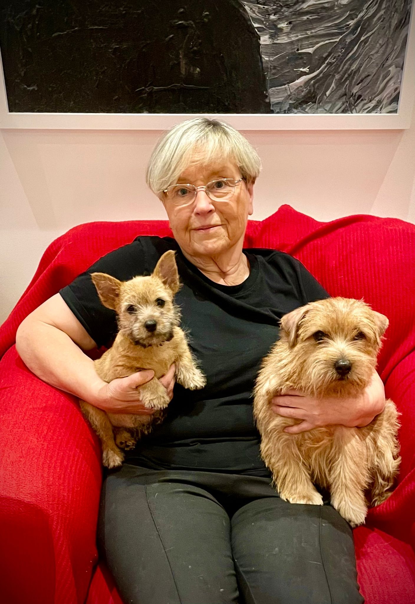

Marja Salminen
Lapsuudenkodissani oli aina koiria, viimeisenä esim. suomenpystykorvauros Jeri. Ensimmäinen ikioma koirani oli pitkäkarvainen mäyräkoirauros, Zidy Munsterhielm-Ehnbergin (silloin Zidy Åström) kasvattama Zekiwa Grand Slam, joka syntyi 25.4.1965. Sen jälkeen minulla oli sen poika Zekiwa Porto Rico Gobbler, Grand Slam oli Suomen ja Ruotsin valio ja Porto Rico Gobbler C.I.B ja sekä jälki- että luolavalio. Muutama vuosi myöhemmin hankin vielä nartun Cacao-Chouva, ja ensimmäinen pitkäkarvainen mäyräkoirapentue syntyi vuonna 1973.
Jo vuonna 1976 Börje Ehnberg soitti minulle ja kysyi, olisiko minulla halukkuutta osallistua tuomarikoulutukseen ja siten valmistua mäyräkoiratuomariksi. Silloin meillä oli kaksi pientä tytärtä ja mieheni Kari oli jo ulkomuototuomari ja arvosteli paljon. Olin tietysti iloinen ja arvostin suuresti, että minua kysyttiin, mutta kieltäydyin perhesyistä. Sitten menikin lähes 20 vuotta ulkomuototuomariksi valmistumiseen, myös rotu ja ryhmä oli vaihtunut. Ulkomuototuomariksi valmistuin vuonna 1993. Ensimmäiset oikeudet sain omille roduilleni norfolkin- ja norwichinterriereille. Laajensin FCI-3 ryhmässä nopeaan tahtiin ja sainkin poikkeuksellisesti oikeuden laajentaa myös entiseen omaan ryhmääni FCI-4 eli mäyräkoiriin vuonna 1995.
Mäyräkoiria olen arvostellut kaikissa pohjoismaissa, USAssa ja Australiassa. Suomessa olen arvostellut ryhmänäyttelyissä, kaikkien rotujen näyttelyissä ja kansainvälisissä näyttelyissä lähes vuosittain. Lisäksi olen ollut useaan kertaan tuomarin ominaisuudessa mäyräkoirien jalostustarkastuksissa. Erikoisnäyttelyä 2.8.2025 odotan innolla. Mieliinpainuvia arvostelutehtäviä ovat olleet Messukeskuksen FCI-4 rodun ja ryhmän arvostelu vuonna 2004 sekä Ruotsissa vuonna 2008 pidetyssä Maailmanvoittajanäyttelyssä pitkäkarvaisten kääpiömäyräkoirien arvostelu.
Marja Salminen
